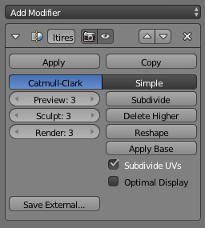

多分辨率修改器–knight翻译¶
The Multiresolution modifier (often shortened to Multires) gives you the ability to subdivide a mesh similarly to the Subdivision Surface Modifier, but also allows you to edit the new subdivision levels in sculpt mode.
注解
多分辨率修改器 是唯一一个在栈里不能改变位置的修改器，就像意味着在此之前会有几何体或其他对象数据的创建或删除一样（例如，所有的 生成 修改器，某些 修改 修改器以及某些 模拟 修改器不能出现在多分辨率修改器之前）。
选项¶

Multires modifier.
- Catmull-Clark / 简单
设置细分的类型。
- 简单型
保持当前的形状，并简单地细分边缘。
- Catmull-Clark 型
- Creates a smooth surface, usually smaller than the original, using the standard Catmull-Clark subdivision surface algorithm.
- 预览
设置细分的级别，在3D视图里展示出来。
- 雕刻
设置将在雕刻模式里使用的细分的数量。
- 渲染
设置渲染时的细分的数量。
- 细分
添加另一级别的细分。
- 删除更高的级别
删除比当前细分级别高的所有细分级别。
- 重塑
从另一个网面复制顶点坐标。使用前先选择与之匹配拓扑和顶点索引的不同网面的物体，然后
Shift选择你要复制的顶点坐标的物体， 点击 重塑 。- 应用到基型
修改原始未细分的网面，以匹配细分后的网面的形态。
- 细分UV
激活后，UV图也会细分。（例如，Blender 会添加 虚拟 坐标到所有由此修改器产生的子面）。
- 最佳显示
当画该物体的线框图时，新细分边的线会略过（仅画出原始几何体的边）。
- 另存数据
保存置换数据到外部的 .btx 文件。